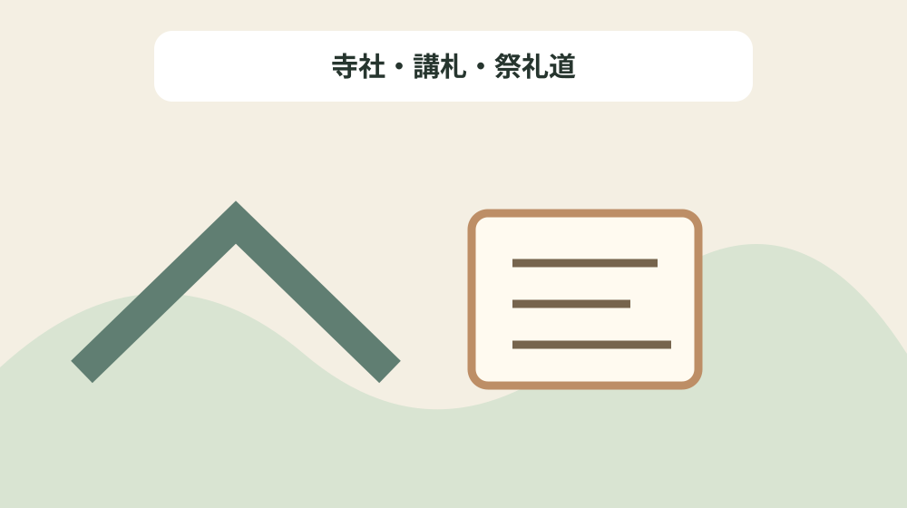
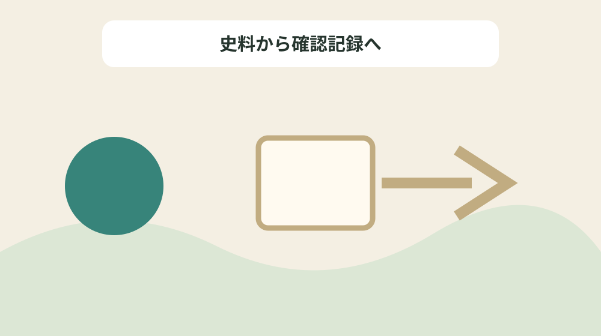

近世森町の寺社と信仰を宗派・講・祭礼史料で読む
結論：寺社、宗派、講、祭礼、史料の時点を別欄で確認することで、資料の記載と現在の状態を混同しない近世宗教史料地図になります。
近世宗教史料地図で解く問い
森町公式資料には「近世森地域の宗教的基盤をなすものは、小國神社を中心とする摂末社(せつまっしゃ)と神人(じにん)、蓮華寺を核とした天台寺院と僧侶、真言系の修験者(しゅげんじゃ)達、そして、大洞院や可睡斎を軸とした曹洞宗寺院と禅僧の活動であった。」と記されています。近世森町の寺社と信仰を宗派・講・祭礼史料で読むでは、この記載を近世宗教史料地図の一行にし、寺社、宗派、講、祭礼、史料の時点を別欄で確認するための根拠として扱います。資料名と確認日を先に書き、後から説明だけが独り歩きしないようにします。
同じページで確認できる「飯田院内の当山派の修験(しゅげん)は、岩室寺や北遠の霊山から里に下り、遠州十八人組の飯田組を組織し、陰陽師(おんみょうじ)や万歳などの呪術師や遊芸集団も混在するなど、民間信仰の底辺を固め、現代の歴史文化に与えた影響は極めて大きい。」は、前の事実と似ていても別の対象です。寺社・講札・祭礼道を読み解くときは、資料の掲載順ではなく、名称・年代・場所・根拠の対応を見ます。写真、家族の記憶、公的資料を三列に分け、食い違いを未確認として残します。
近世宗教史料地図では「その後、家康は、小國社に590石の朱印地を与えてその権威はかろうじて保たれたが、中世的組織は、寛文・延宝期を境に再編成されている。」の確認欄と「特に、高平山遍照寺の大日如来の勧進は、彼等の旦那である遠州の東部や中部の広範な人々に拠るものである。」の照会欄を分けます。公式本文が述べていない現況や公開可否は未確認と書き、家族の記憶には話者と聞取日を添えます。旧記録を消さず、回答日と確認先を付けた新しい行を追加します。
公式本文から確定できる十二事実
森町公式資料には「これは、「 諸社 ( しょしゃ ) 禰宜 ( ねぎ ) 神主法度」や「寺院法度」によるもので、蓮華寺の場合は、比叡山から東叡山(江戸寛永寺)の支配下に移された。」と記されています。近世森町の寺社と信仰を宗派・講・祭礼史料で読むでは、この記載を近世宗教史料地図の一行にし、寺社、宗派、講、祭礼、史料の時点を別欄で確認するための根拠として扱います。主語と対象を原文へ戻し、似た地名や人物を同じものとして扱いません。
同じページで確認できる「(1)小國神社絵図。江戸前期の様子を伝える絵図で、本殿は流れ造り、楼門や鐘楼・社僧関係のお堂などもあり、神仏習合(しゅうごう)当時の建造物がみえる。 (森町一宮 小國神社所蔵)」は、前の事実と似ていても別の対象です。寺社・講札・祭礼道を読み解くときは、資料の掲載順ではなく、名称・年代・場所・根拠の対応を見ます。資料の利点は典拠へ戻れることにあり、現在の状態を保証するものではありません。
近世宗教史料地図では「飯田院内の当山派の修験(しゅげん)は、岩室寺や北遠の霊山から里に下り、遠州十八人組の飯田組を組織し、陰陽師(おんみょうじ)や万歳などの呪術師や遊芸集団も混在するなど、民間信仰の底辺を固め、現代の歴史文化に与えた影響は極めて大きい。」の確認欄と「(2)神道 裁許状 ( さいきょじょう )。京都の吉田家に願い出て、神官であることを証明してもらうものであり、一宮では1667年(寛文7年)に神社直属の社家(しゃけ)が多額の費用を使ってこの許状を得た。 (森町円田 個人所蔵文書)」の照会欄を分けます。公式本文が述べていない現況や公開可否は未確認と書き、家族の記憶には話者と聞取日を添えます。不動産の道路、境界、登記、建物安全性は、この歴史資料とは別に調べます。
近世宗教史料地図の列を決める
森町公式資料には「特に、高平山遍照寺の大日如来の勧進は、彼等の旦那である遠州の東部や中部の広範な人々に拠るものである。」と記されています。近世森町の寺社と信仰を宗派・講・祭礼史料で読むでは、この記載を近世宗教史料地図の一行にし、寺社、宗派、講、祭礼、史料の時点を別欄で確認するための根拠として扱います。年号の横へ出来事を示す動詞を残し、制作年と伝来年を一つにしません。
同じページで確認できる「これは、「 諸社 ( しょしゃ ) 禰宜 ( ねぎ ) 神主法度」や「寺院法度」によるもので、蓮華寺の場合は、比叡山から東叡山(江戸寛永寺)の支配下に移された。」は、前の事実と似ていても別の対象です。寺社・講札・祭礼道を読み解くときは、資料の掲載順ではなく、名称・年代・場所・根拠の対応を見ます。不足する情報を空欄の理由として残し、推測で表を完成させません。
近世宗教史料地図では「慶長17年には、駿府城において「天下曹洞宗法度」を下付され、信州や上方までこれを触れるなど、その支配力は大きい。」の確認欄と「また、一宮の 散在神人 ( さんざいじにん ) は独立し、直属の社家は神主鈴木氏の配下に置かれた。」の照会欄を分けます。公式本文が述べていない現況や公開可否は未確認と書き、家族の記憶には話者と聞取日を添えます。まだ売ると決めていない段階でも、資料の所在と根拠を家族で共有できます。

年代の種類を動詞で分ける
森町公式資料には「宗山は、円田の全生寺に隠居し、中世曹洞禅(そうとうぜん)の中心大洞院はもとより、天台、真言系勢力の巻き返しを監視して、幕府の宗教施策の一端を担った。」と記されています。近世森町の寺社と信仰を宗派・講・祭礼史料で読むでは、この記載を近世宗教史料地図の一行にし、寺社、宗派、講、祭礼、史料の時点を別欄で確認するための根拠として扱います。所在地が示されても見学可能とは限らないため、公開条件を別に確認します。
同じページで確認できる「慶長17年には、駿府城において「天下曹洞宗法度」を下付され、信州や上方までこれを触れるなど、その支配力は大きい。」は、前の事実と似ていても別の対象です。寺社・講札・祭礼道を読み解くときは、資料の掲載順ではなく、名称・年代・場所・根拠の対応を見ます。問い合わせは対象名、参照ページ、確認済みの事実、知りたい一点に絞ります。
近世宗教史料地図では「(2)神道 裁許状 ( さいきょじょう )。京都の吉田家に願い出て、神官であることを証明してもらうものであり、一宮では1667年(寛文7年)に神社直属の社家(しゃけ)が多額の費用を使ってこの許状を得た。 (森町円田 個人所蔵文書)」の確認欄と「宗山は、円田の全生寺に隠居し、中世曹洞禅(そうとうぜん)の中心大洞院はもとより、天台、真言系勢力の巻き返しを監視して、幕府の宗教施策の一端を担った。」の照会欄を分けます。公式本文が述べていない現況や公開可否は未確認と書き、家族の記憶には話者と聞取日を添えます。最初の一行から始め、十二事実を同時に確定しようとしないことが継続の要点です。
場所・所蔵・公開条件を混同しない
森町公式資料には「近世森地域の宗教的基盤をなすものは、小國神社を中心とする摂末社(せつまっしゃ)と神人(じにん)、蓮華寺を核とした天台寺院と僧侶、真言系の修験者(しゅげんじゃ)達、そして、大洞院や可睡斎を軸とした曹洞宗寺院と禅僧の活動であった。」と記されています。近世森町の寺社と信仰を宗派・講・祭礼史料で読むでは、この記載を近世宗教史料地図の一行にし、寺社、宗派、講、祭礼、史料の時点を別欄で確認するための根拠として扱います。写真、家族の記憶、公的資料を三列に分け、食い違いを未確認として残します。
同じページで確認できる「一宮の本社・末社及びその神宮寺であった蓮華寺や蓮増院は、戦乱によって寺社領の減少や祭祀権の没収がなされた。」は、前の事実と似ていても別の対象です。寺社・講札・祭礼道を読み解くときは、資料の掲載順ではなく、名称・年代・場所・根拠の対応を見ます。旧記録を消さず、回答日と確認先を付けた新しい行を追加します。
近世宗教史料地図では「その後、家康は、小國社に590石の朱印地を与えてその権威はかろうじて保たれたが、中世的組織は、寛文・延宝期を境に再編成されている。」の確認欄と「その後、家康は、小國社に590石の朱印地を与えてその権威はかろうじて保たれたが、中世的組織は、寛文・延宝期を境に再編成されている。」の照会欄を分けます。公式本文が述べていない現況や公開可否は未確認と書き、家族の記憶には話者と聞取日を添えます。資料名と確認日を先に書き、後から説明だけが独り歩きしないようにします。
良い点
森町公式資料には「これは、「 諸社 ( しょしゃ ) 禰宜 ( ねぎ ) 神主法度」や「寺院法度」によるもので、蓮華寺の場合は、比叡山から東叡山(江戸寛永寺)の支配下に移された。」と記されています。近世森町の寺社と信仰を宗派・講・祭礼史料で読むでは、この記載を近世宗教史料地図の一行にし、寺社、宗派、講、祭礼、史料の時点を別欄で確認するための根拠として扱います。資料の利点は典拠へ戻れることにあり、現在の状態を保証するものではありません。
同じページで確認できる「特に、高平山遍照寺の大日如来の勧進は、彼等の旦那である遠州の東部や中部の広範な人々に拠るものである。」は、前の事実と似ていても別の対象です。寺社・講札・祭礼道を読み解くときは、資料の掲載順ではなく、名称・年代・場所・根拠の対応を見ます。不動産の道路、境界、登記、建物安全性は、この歴史資料とは別に調べます。
近世宗教史料地図では「飯田院内の当山派の修験(しゅげん)は、岩室寺や北遠の霊山から里に下り、遠州十八人組の飯田組を組織し、陰陽師(おんみょうじ)や万歳などの呪術師や遊芸集団も混在するなど、民間信仰の底辺を固め、現代の歴史文化に与えた影響は極めて大きい。」の確認欄と「士峯宗山(しほうそうざん)は、家康の信望を受けた等膳(とうぜん)(可睡斎十一世)の高弟で、三河・遠州・駿河など、曹洞宗寺院を管轄する僧録司(そうろくし)可睡斎の十三世でもある。」の照会欄を分けます。公式本文が述べていない現況や公開可否は未確認と書き、家族の記憶には話者と聞取日を添えます。主語と対象を原文へ戻し、似た地名や人物を同じものとして扱いません。
注文したい点
森町公式資料には「特に、高平山遍照寺の大日如来の勧進は、彼等の旦那である遠州の東部や中部の広範な人々に拠るものである。」と記されています。近世森町の寺社と信仰を宗派・講・祭礼史料で読むでは、この記載を近世宗教史料地図の一行にし、寺社、宗派、講、祭礼、史料の時点を別欄で確認するための根拠として扱います。不足する情報を空欄の理由として残し、推測で表を完成させません。
同じページで確認できる「(2)神道 裁許状 ( さいきょじょう )。京都の吉田家に願い出て、神官であることを証明してもらうものであり、一宮では1667年(寛文7年)に神社直属の社家(しゃけ)が多額の費用を使ってこの許状を得た。 (森町円田 個人所蔵文書)」は、前の事実と似ていても別の対象です。寺社・講札・祭礼道を読み解くときは、資料の掲載順ではなく、名称・年代・場所・根拠の対応を見ます。まだ売ると決めていない段階でも、資料の所在と根拠を家族で共有できます。
近世宗教史料地図では「慶長17年には、駿府城において「天下曹洞宗法度」を下付され、信州や上方までこれを触れるなど、その支配力は大きい。」の確認欄と「近世森地域の宗教的基盤をなすものは、小國神社を中心とする摂末社(せつまっしゃ)と神人(じにん)、蓮華寺を核とした天台寺院と僧侶、真言系の修験者(しゅげんじゃ)達、そして、大洞院や可睡斎を軸とした曹洞宗寺院と禅僧の活動であった。」の照会欄を分けます。公式本文が述べていない現況や公開可否は未確認と書き、家族の記憶には話者と聞取日を添えます。年号の横へ出来事を示す動詞を残し、制作年と伝来年を一つにしません。
対案・結論
森町公式資料には「宗山は、円田の全生寺に隠居し、中世曹洞禅(そうとうぜん)の中心大洞院はもとより、天台、真言系勢力の巻き返しを監視して、幕府の宗教施策の一端を担った。」と記されています。近世森町の寺社と信仰を宗派・講・祭礼史料で読むでは、この記載を近世宗教史料地図の一行にし、寺社、宗派、講、祭礼、史料の時点を別欄で確認するための根拠として扱います。問い合わせは対象名、参照ページ、確認済みの事実、知りたい一点に絞ります。
同じページで確認できる「また、一宮の 散在神人 ( さんざいじにん ) は独立し、直属の社家は神主鈴木氏の配下に置かれた。」は、前の事実と似ていても別の対象です。寺社・講札・祭礼道を読み解くときは、資料の掲載順ではなく、名称・年代・場所・根拠の対応を見ます。最初の一行から始め、十二事実を同時に確定しようとしないことが継続の要点です。
近世宗教史料地図では「(2)神道 裁許状 ( さいきょじょう )。京都の吉田家に願い出て、神官であることを証明してもらうものであり、一宮では1667年(寛文7年)に神社直属の社家(しゃけ)が多額の費用を使ってこの許状を得た。 (森町円田 個人所蔵文書)」の確認欄と「飯田院内の当山派の修験(しゅげん)は、岩室寺や北遠の霊山から里に下り、遠州十八人組の飯田組を組織し、陰陽師(おんみょうじ)や万歳などの呪術師や遊芸集団も混在するなど、民間信仰の底辺を固め、現代の歴史文化に与えた影響は極めて大きい。」の照会欄を分けます。公式本文が述べていない現況や公開可否は未確認と書き、家族の記憶には話者と聞取日を添えます。所在地が示されても見学可能とは限らないため、公開条件を別に確認します。

家族に残す確認記録
森町公式資料には「近世森地域の宗教的基盤をなすものは、小國神社を中心とする摂末社(せつまっしゃ)と神人(じにん)、蓮華寺を核とした天台寺院と僧侶、真言系の修験者(しゅげんじゃ)達、そして、大洞院や可睡斎を軸とした曹洞宗寺院と禅僧の活動であった。」と記されています。近世森町の寺社と信仰を宗派・講・祭礼史料で読むでは、この記載を近世宗教史料地図の一行にし、寺社、宗派、講、祭礼、史料の時点を別欄で確認するための根拠として扱います。旧記録を消さず、回答日と確認先を付けた新しい行を追加します。
同じページで確認できる「宗山は、円田の全生寺に隠居し、中世曹洞禅(そうとうぜん)の中心大洞院はもとより、天台、真言系勢力の巻き返しを監視して、幕府の宗教施策の一端を担った。」は、前の事実と似ていても別の対象です。寺社・講札・祭礼道を読み解くときは、資料の掲載順ではなく、名称・年代・場所・根拠の対応を見ます。資料名と確認日を先に書き、後から説明だけが独り歩きしないようにします。
近世宗教史料地図では「その後、家康は、小國社に590石の朱印地を与えてその権威はかろうじて保たれたが、中世的組織は、寛文・延宝期を境に再編成されている。」の確認欄と「(1)小國神社絵図。江戸前期の様子を伝える絵図で、本殿は流れ造り、楼門や鐘楼・社僧関係のお堂などもあり、神仏習合(しゅうごう)当時の建造物がみえる。 (森町一宮 小國神社所蔵)」の照会欄を分けます。公式本文が述べていない現況や公開可否は未確認と書き、家族の記憶には話者と聞取日を添えます。写真、家族の記憶、公的資料を三列に分け、食い違いを未確認として残します。
現地確認と権利資料を分ける
森町公式資料には「これは、「 諸社 ( しょしゃ ) 禰宜 ( ねぎ ) 神主法度」や「寺院法度」によるもので、蓮華寺の場合は、比叡山から東叡山(江戸寛永寺)の支配下に移された。」と記されています。近世森町の寺社と信仰を宗派・講・祭礼史料で読むでは、この記載を近世宗教史料地図の一行にし、寺社、宗派、講、祭礼、史料の時点を別欄で確認するための根拠として扱います。不動産の道路、境界、登記、建物安全性は、この歴史資料とは別に調べます。
同じページで確認できる「その後、家康は、小國社に590石の朱印地を与えてその権威はかろうじて保たれたが、中世的組織は、寛文・延宝期を境に再編成されている。」は、前の事実と似ていても別の対象です。寺社・講札・祭礼道を読み解くときは、資料の掲載順ではなく、名称・年代・場所・根拠の対応を見ます。主語と対象を原文へ戻し、似た地名や人物を同じものとして扱いません。
近世宗教史料地図では「飯田院内の当山派の修験(しゅげん)は、岩室寺や北遠の霊山から里に下り、遠州十八人組の飯田組を組織し、陰陽師(おんみょうじ)や万歳などの呪術師や遊芸集団も混在するなど、民間信仰の底辺を固め、現代の歴史文化に与えた影響は極めて大きい。」の確認欄と「これは、「 諸社 ( しょしゃ ) 禰宜 ( ねぎ ) 神主法度」や「寺院法度」によるもので、蓮華寺の場合は、比叡山から東叡山(江戸寛永寺)の支配下に移された。」の照会欄を分けます。公式本文が述べていない現況や公開可否は未確認と書き、家族の記憶には話者と聞取日を添えます。資料の利点は典拠へ戻れることにあり、現在の状態を保証するものではありません。
大石の視点
森町公式資料には「特に、高平山遍照寺の大日如来の勧進は、彼等の旦那である遠州の東部や中部の広範な人々に拠るものである。」と記されています。近世森町の寺社と信仰を宗派・講・祭礼史料で読むでは、この記載を近世宗教史料地図の一行にし、寺社、宗派、講、祭礼、史料の時点を別欄で確認するための根拠として扱います。まだ売ると決めていない段階でも、資料の所在と根拠を家族で共有できます。
同じページで確認できる「士峯宗山(しほうそうざん)は、家康の信望を受けた等膳(とうぜん)(可睡斎十一世)の高弟で、三河・遠州・駿河など、曹洞宗寺院を管轄する僧録司(そうろくし)可睡斎の十三世でもある。」は、前の事実と似ていても別の対象です。寺社・講札・祭礼道を読み解くときは、資料の掲載順ではなく、名称・年代・場所・根拠の対応を見ます。年号の横へ出来事を示す動詞を残し、制作年と伝来年を一つにしません。
近世宗教史料地図では「慶長17年には、駿府城において「天下曹洞宗法度」を下付され、信州や上方までこれを触れるなど、その支配力は大きい。」の確認欄と「慶長17年には、駿府城において「天下曹洞宗法度」を下付され、信州や上方までこれを触れるなど、その支配力は大きい。」の照会欄を分けます。公式本文が述べていない現況や公開可否は未確認と書き、家族の記憶には話者と聞取日を添えます。不足する情報を空欄の理由として残し、推測で表を完成させません。
まとめ
森町公式資料には「宗山は、円田の全生寺に隠居し、中世曹洞禅(そうとうぜん)の中心大洞院はもとより、天台、真言系勢力の巻き返しを監視して、幕府の宗教施策の一端を担った。」と記されています。近世森町の寺社と信仰を宗派・講・祭礼史料で読むでは、この記載を近世宗教史料地図の一行にし、寺社、宗派、講、祭礼、史料の時点を別欄で確認するための根拠として扱います。最初の一行から始め、十二事実を同時に確定しようとしないことが継続の要点です。
同じページで確認できる「近世森地域の宗教的基盤をなすものは、小國神社を中心とする摂末社(せつまっしゃ)と神人(じにん)、蓮華寺を核とした天台寺院と僧侶、真言系の修験者(しゅげんじゃ)達、そして、大洞院や可睡斎を軸とした曹洞宗寺院と禅僧の活動であった。」は、前の事実と似ていても別の対象です。寺社・講札・祭礼道を読み解くときは、資料の掲載順ではなく、名称・年代・場所・根拠の対応を見ます。所在地が示されても見学可能とは限らないため、公開条件を別に確認します。
近世宗教史料地図では「(2)神道 裁許状 ( さいきょじょう )。京都の吉田家に願い出て、神官であることを証明してもらうものであり、一宮では1667年(寛文7年)に神社直属の社家(しゃけ)が多額の費用を使ってこの許状を得た。 (森町円田 個人所蔵文書)」の確認欄と「一宮の本社・末社及びその神宮寺であった蓮華寺や蓮増院は、戦乱によって寺社領の減少や祭祀権の没収がなされた。」の照会欄を分けます。公式本文が述べていない現況や公開可否は未確認と書き、家族の記憶には話者と聞取日を添えます。問い合わせは対象名、参照ページ、確認済みの事実、知りたい一点に絞ります。
よくある質問
近世宗教史料地図で最初に書く項目は何ですか。
資料名、対象名、確認日、根拠の種類です。寺社、宗派、講、祭礼、史料の時点を別欄で確認するため、現況と家族の記憶は別欄にします。
近世宗教史料地図に所在地があれば現地を見学できますか。
掲載だけでは判断できません。近世森地域の宗教的基盤をなすものは、小國神社を中心とする摂末社(せつまっしゃ)と神人(じにん)、蓮華寺を核とした天台寺院と僧侶、真言系の修験者(しゅげんじゃ)達、そして、大洞院や可睡斎を軸とした曹洞宗寺院と禅僧の活動であった。という記録は寺社・講札・祭礼道を読む根拠ですが、現在の公開日時や立入り条件の根拠ではありません。対象ごとに管理者の案内を確認します。
近世宗教史料地図で年代が複数ある場合はどれを採用しますか。
その後、家康は、小國社に590石の朱印地を与えてその権威はかろうじて保たれたが、中世的組織は、寛文・延宝期を境に再編成されている。という記録を起点に、寺社・講札・祭礼道の制作、記録、移転、発見などの動作を分けます。異なる出来事の年は統合せず、それぞれの典拠を同じ行に残します。
家族の記憶は近世宗教史料地図の公式事実と一緒に書けますか。
これは、「 諸社 ( しょしゃ ) 禰宜 ( ねぎ ) 神主法度」や「寺院法度」によるもので、蓮華寺の場合は、比叡山から東叡山(江戸寛永寺)の支配下に移された。という公的記載とは別欄にします。寺社・講札・祭礼道について話した人、聞取日、確信度を書けば、家族の記憶を残しつつ公的資料へ上書きせず比較できます。
公式情報源
最終確認日：2026-08-18 ／ 公表事実と執筆者の解釈・意見を分けて記載しています。